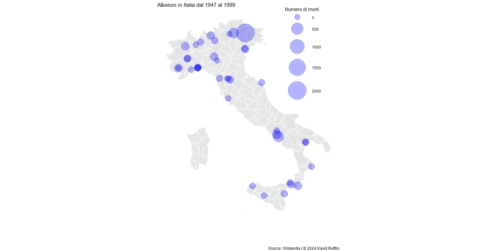
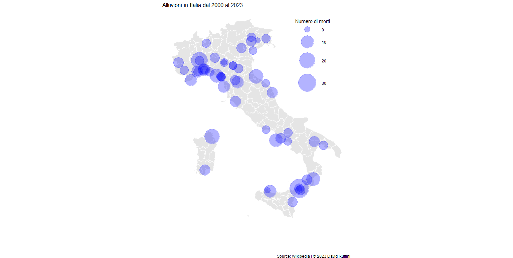

Le inondazioni sono allagamenti dovuti a straripamenti di fiumi, alluvioni, alte maree o, più in generale, una presenza elevata e non gestibile di acqua.
Negli ultimi periodi i cambiamenti climatici hanno provocato sempre più spesso eventi che secondo i modelli di rischio idrologico sono considerati rari; un esempio è l'Emilia Romagna dove in 24 ore sono caduti 200 millimetri di acqua.
Spesso, alla forza di natura si accompagna una scarsa manutenzione dei letti dei fiumi e una mancanza più ampia di tutte quelle azioni volte a prevenire inondazioni gravi.
Dal 1947 al 1999 in Italia sono state registrate 39 inondazioni, di cui solamente 4 non hanno registrato vittime.
L'area più colpita è stata il Nord e l'evento con più vittime è stato il disastro del Vajoint del 9 ottobre del 1963; in questa catastrofe una frana crollò nel bacino artificiale costituito attraverso la diga omonima, innalzando momemntaneamente il livello dell'acqua che tracimò la diga e inondò i paesi sottostanti colpendo prima Erto e Casso, poi quelli più in fondo alla valle.

Inondazioni segnalate dal 1947 al 1999.
Dal 2000 al 2023 sono stati registrati 58 allagamenti. Se nell'intervallo temporale precedente la media era di 0.75 inondazioni all'anno, in questo caso ne abbiamo 2.50 ogni anno. Chiaramente è necessario considerare che la densità abitativa negli anni è aumentata, il che porta ad avere pià centri abitati come potenziali bersagli di un cataclisma.
Per lo stesso motivo, in questo orizzonte temporale, su 58 inondazioni sono solamente 3 quelli che non registrano vittime; prima l'incidenza di eventi non mortali era di circa il 10%, mentre ora è circa il 5%.

Inondazioni segnalate dal 2000 al 2023.
Le zone più colpite sembrano essere quelle del Nord Ovest, mentre l'evento con più vittime è l'alluvione di Messina del 2009, dove un nubifragio durato 11 ore tra l'uno di ottobre e il giorno seguente, fece straripare fiumi e provocò frane, causando la morte di quasi 40 persone.
Ciao!
Mi chiamo David, sono uno studente di Statistica e in questo sito raccoglierò le mie analisi su argomenti che trovo di mio interesse.
I motivi principali che mi hanno spinto a pubblicare le mie ricerche sono il voler dare ordine a ciò che prima vagava solamente tra le cartelle del desktop e condividere con gli altri i risultati delle suddette indagini.
Se siete in disaccordo, riconoscete un mio errore o per qualsiasi altro motivo volete scrivermi, potete contattarmi nei canali che ho messo in fondo alla pagina.